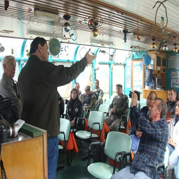
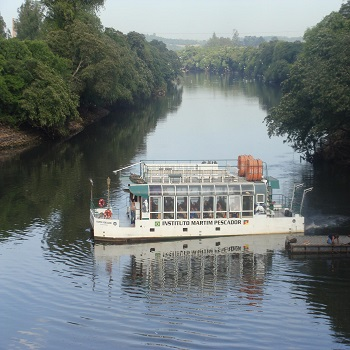
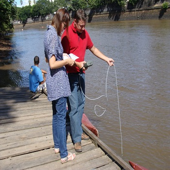

-

Aula flutuante
Através da navegação é realizado uma aula onde os participantes conseguem identificar as ações antrópicas como também mostrar as belezas da fauna e da flora do Rio dos Sinos. Além de despertar a sencibilização com as questões ambientais ambieltal
-

Eventos
A Instituição tanbém atende empresas que tem interece proporcionar aos seus coloboradores a conhecer o Rio dos Sinos e os problemas ambientais enfrentados pelo mesmo.
-

Qualidade da água
Além dos eventos e de aulas flutuantes o Instituto Martim Pescador auxilia os técnicos da SEMAE no controle da oxigenação da água e no controle do nível do Rio dos Sinos nos periodos de cheias.